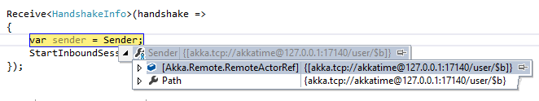
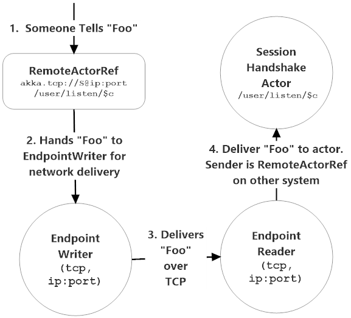

Sending Messages to Remote Actors
Once you form an association between two ActorSystems, you can now send messages transparently between actors regardless of where they are on the network.
Serialization
Serialization of messages in Akka.NET is transparent, but in order to achieve that transparency there are some practices you need to observe in how you design your project.
- Akka.NET serialization is strongly typed - if you serialize a message of type
Foo.FooMessage.MyMessage, Foo.dll(this is a Fully Qualified Type Name (FQN)) then Akka.NET will look for that exact type when it attempts to deserialize your message. If that type isn't found, deserialization fails. - Therefore, all of your network messages should be defined in shared assemblies that are referenced by all of the applications running Akka.NET
ActorSystems who will be communicating remotely.
Initiating Remote Messaging with ActorSelections
When your ActorSystem boots, it won't have any associations to other remote systems - so you have to establish one by sending a message to a remote actor via ActorSelection initially which you can do by sending a message to an actor's remote ActorPath.
NOTE: You can also establish an association by deploying actors onto a remote
ActorSystem.
Let's consider the following two actors and some message classes.
// Written into a shared library
public class Msg {
public string Content {get; set;}
}
public class StartRemoting{}
// Initiates remote contact
public class SendActor : ReceiveActor{
public SendActor(){
Receive<StartRemoting>(s => {
Context.ActorSelection("akka.tcp://RemoteSys@localhost:9000/user/Echo")
.Tell(new Msg("hi!"));
});
Receive<Msg>(msg => {
Console.WriteLine("Received {0} from {1}", msg.Content, Sender);
});
}
}
// Runs in a separate process from SendActor
public class EchoActor : ReceiveActor{
public EchoActor(){
Receive<Msg>(msg => {
// echo message back to sender
Sender.Tell(msg);
});
}
}
NOTE: In a real project, all three of these classes would live in separate projects. See the Chat example inside the Akka.NET core repository for a simple example.
After the Msg is delivered via ActorSelection is delivered to the EchoActor, the EchoActor can simply reply to the Sender field - just like how you would with local actors!
What's really going on there?

NOTE: This screenshot is from a real Akka.NET project and not the canned example above, but the point is the same.
The Sender, an IActorRef, is actually an Akka.Remote.RemoteActorRef! But the fact that this actor reference resides elsewhere on the network is a detail that's transparent to the actor code you wrote!
In essence, minus the initial ActorSelection used to start remote communication between the two ActorSystems, any actor in either ActorSystem could reply to eachother without knowing or caring that they exist elsewhere on the network. That's pretty cool!
RemoteActorRef and Location Transparency
What RemoteActorRef gives us is a magical property called Location Transparency.
What location transparency means is that whenever you send a message to an actor, you don't need to know where they are within an actor system, which might span hundreds of computers. You just have to know that actors' address.
It's the job of the RemoteActorRef to make a remote actor running on in a different process look and feel exactly the same as an IActorRef running locally inside the same process as your code. This is what it means to "have a transparent location."
Regardless of where the actor actually resides, it doesn't affect your code one way or another.
So this has one profound implicat on your Akka.NET applications - all of your actor code is already able to run on the network by default.
Therefore, many of the code samples in Akka.NET Remoting won't look very "networky." That's on purpose. That's Akka.NET taking care of the heavy lifting for us!
How RemoteActorRef Actually Works
So how does the RemoteActorRef class provide location transparency for us?

A RemoteActorRef is actually a paper-thin IActorRef instance that maps back to an actor that actually exists somewhere else on the network.
Every time you Tell a message to a RemoteActorRef you're actually writing a message to your local EndpointWriter for that transport, who will in turn deliver the message over the network to an EndpointReader on the other side of the association.
The EndpointReader is able to tell, with some help from the RemoteActorRefProvider, which local actor this network message was intended for and will deliver that message to the correct local actor.
And, as you might have guessed, it will also create a RemoteActorRef that the receiver of the network message can use the reply to the original sender!
So that is the essence of how RemoteActorRefs work - they're a tool to provide location transparency and make it so all of your actor code that works for local actors can automatically work with remote actors without any code modifications.